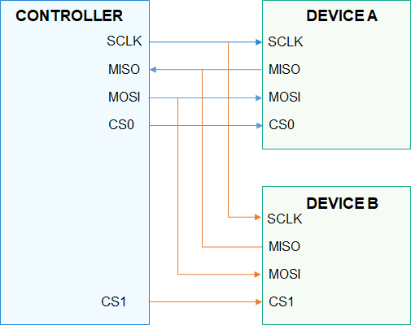

SPI Overview¶
Introduction¶
Serial Peripheral Interface (SPI) is a serial bus specification used for high-speed, full-duplex, and synchronous communication.
SPI is developed by Motorola. It is commonly used for communication with flash memory, real-time clocks, sensors, and analog-to-digital (A/D) converters.
SPI works in controller/device mode. Generally, there is one SPI controller that controls one or more SPI devices. They are connected via four wires:
SCLK: clock signals output from the SPI controller
MOSI: data output from the SPI controller and input into a SPI device
MISO: data output from a SPI device and input into the SPI controller
CS: signals enabled by a SPI device and controlled by the SPI controller
Figure 1 shows the connection between one SPI controller and two SPI devices (Device A and Device B). In this figure, Device A and Device B share three pins (SCLK, MISO, and MOSI) of the controller. CS0 of Device A and CS1 of Device B are connected to CS0 and CS1 of the controller, respectively.
Figure 1 SPI controller/device connection

SPI communication is usually initiated by a controller and is operated as follows:
A single SPI device is selected at a time via the CS to communicate with the SPI controller.
Clock signals are provided for the selected SPI device via the SCLK.
SPI controller sends data to SPI devices via the MOSI, and receives data from SPI devices via the MISO.
SPI can work in one of the following four modes, equivalent to one of the four possible states for Clock Polarity (CPOL) and Clock Phase (CPHA):
When both CPOL and CPHA are 0, the clock signal level is low in the idle state and data is sampled on the first clock edge.
When CPOL is 0 and CPHA is 1, the clock signal level is low in the idle state and data is sampled on the second clock edge.
When CPOL is 1 and CPHA is 0, the clock signal level is high in the idle state and data is sampled on the first clock edge.
When both CPOL and CPHA are 1, the clock signal level is high in the idle state and data is sampled on the second clock edge.
SPI defines a set of common functions for operating an SPI device, including those for:
Obtaining and releasing the handle of an SPI device.
Reading or writing data of a specified length from or into an SPI device.
Customizing data reading or writing via SpiMsg.
Obtaining and setting SPI device configuration parameters.
NOTE: Currently, these functions are only applicable in the communication initiated by the SPI controller.
Available APIs¶
Table 1 APIs for the SPI driver
Capability | Function | Description |
|---|---|---|
SPI device handle obtaining/releasing | SpiOpen | Obtains an SPI device handle. |
SpiClose | Releases an SPI device handle. | |
SPI reading/writing | SpiRead | Reads data of a specified length from an SPI device. |
SpiWrite | Writes data of a specified length into an SPI device. | |
SpiTransfer | Transfers SPI data. | |
SPI device configuration | SpiSetCfg | Sets configuration parameters for an SPI device. |
SpiGetCfg | Obtains configuration parameters of an SPI device. |